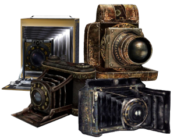

Project Zero / Fatal Frame 3D Viewer
Export 3D Asset
PZViewer/Exports/[asset-name]/
Texture
Credits
Original idea
DaniKH
Collaborators
Scream*Alyx*Psalm
Reference documentation
Assembler and builder of the tool
Claude
Fatal Frame / Project Zero assets belong to their respective publishers. This viewer reads the files you already own; it ships no game data.
How to use...
1. Point it at your games
The Asset Browser lists one row per release.
Original holds the three PS2 games (FF1, FF2, FF3);
Extra holds the ports (FF1 XBOX, FF2 XBOX, FF2 Wii).
FF2 XBOX model geometry loads from .mdl and
.pk2 files with their matching .ppd
sidecars; supported P8 textures are decoded with their palettes.
Press Select or Update and choose exactly the
game's 3ddata folder. The row remembers it;
✖ forgets it.
2. Browse and load
Click a row to open that folder; click a model to load it. The box above the list filters what is shown. Reload re-reads the current folder. In an empty folder the tree offers ... (Parent Folder).
3. Look at it — the viewport bar, and the keys
| Textures (T) | textured ⇄ solid white |
| Wireframe (W) | textured → wireframe over the model → wireframe alone |
| Vertex Colors (V) | texture with the baked vertex colours, or on its own |
| Bones (B) | skeleton on or off, drawn over the model |
| Layers (L) | the material list |
| Reset Cam (F) | frame the model again |
| ← → | previous / next recolour, on the assets that have several |
Drag to orbit, wheel to zoom.
4. Materials
The Layers panel lists one row per material, not per strip of geometry — a face, a sleeve, a piece of set dressing — and shows how many submeshes each one draws. Untick a row to hide it. Drag the panel by its title bar to move it, ▾ to shrink it to the title while you keep working in the viewport.
5. Textures
The VRAM slots are square, one per decoded page. Click one to open it large; close it with ✖, Escape, or a click outside. Extract PNGs writes every page of the loaded model to a zip.
6. Get it out
Export 3D Model writes glTF, OBJ, COLLADA or FBX. Vertex colours are always preserved and the textures are always extracted as PNG next to the file. Batch Convert does a whole folder at once: pick the format, leave it recursive to keep the subfolder structure, and say whether an existing file is skipped or overwritten.
7. Colours
Themes picks a palette, or Dynamic to follow whichever game folder you are browsing. The icon at the top left is the camera of the game on screen.
Select the game data folder
The selected directory must be the game's 3ddata folder itself—not its parent directory or a subfolder. Other directories cannot be saved.
Loading Model into GPU...